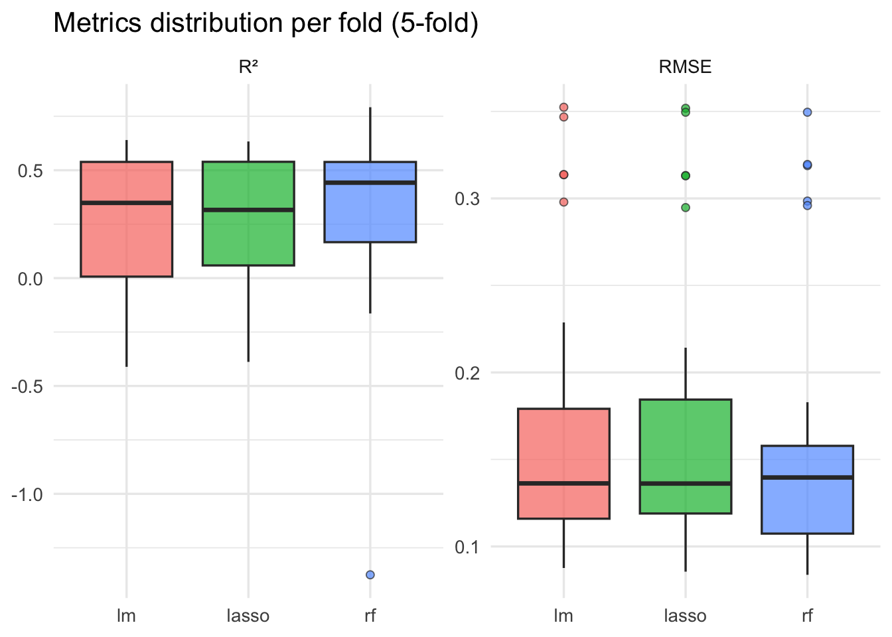
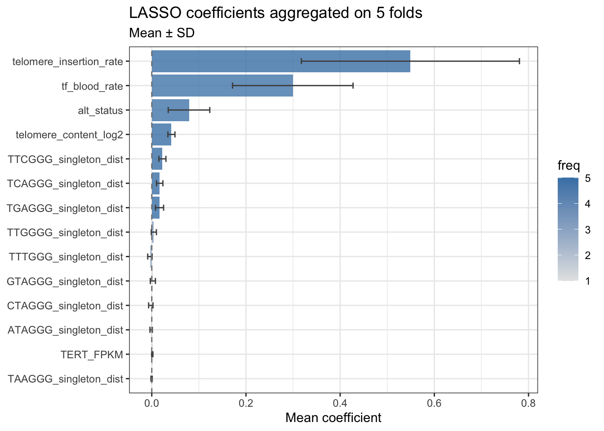
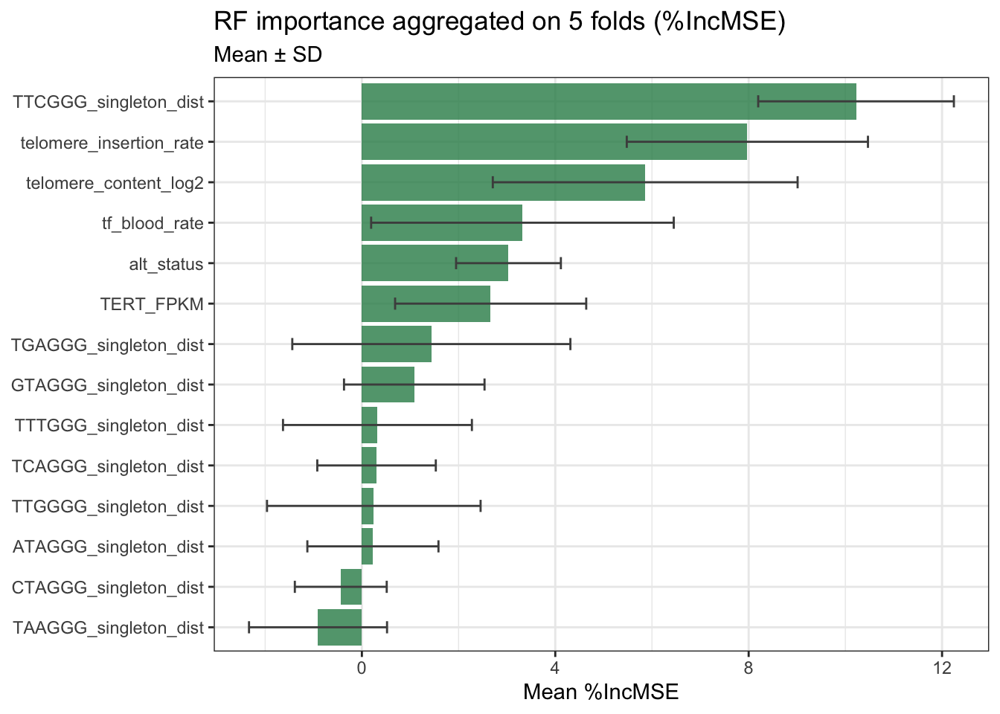
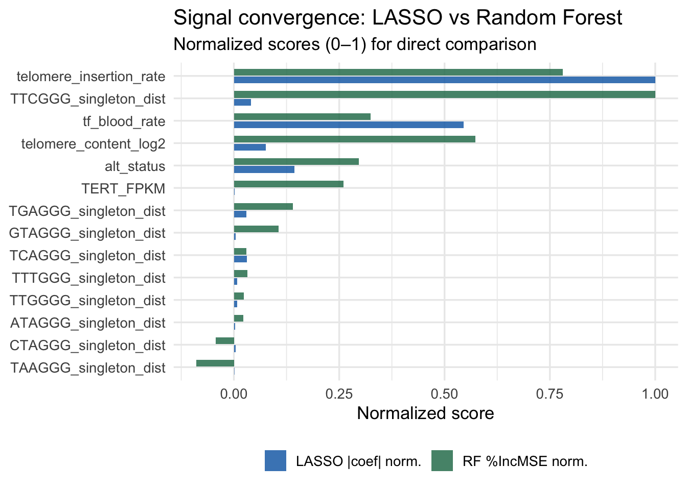
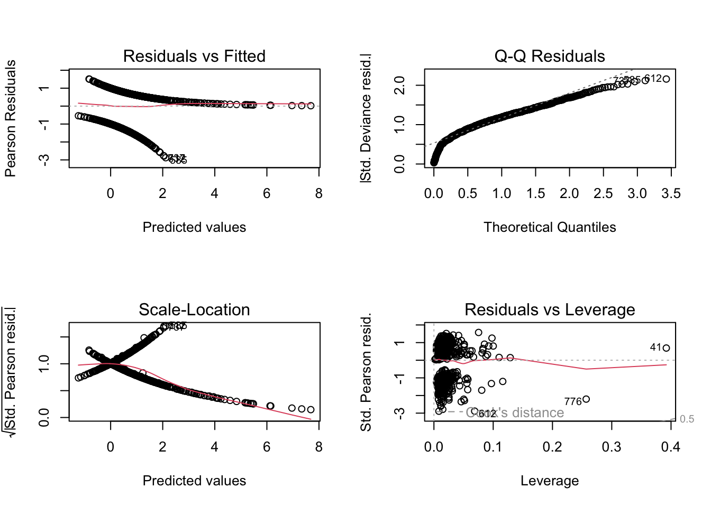
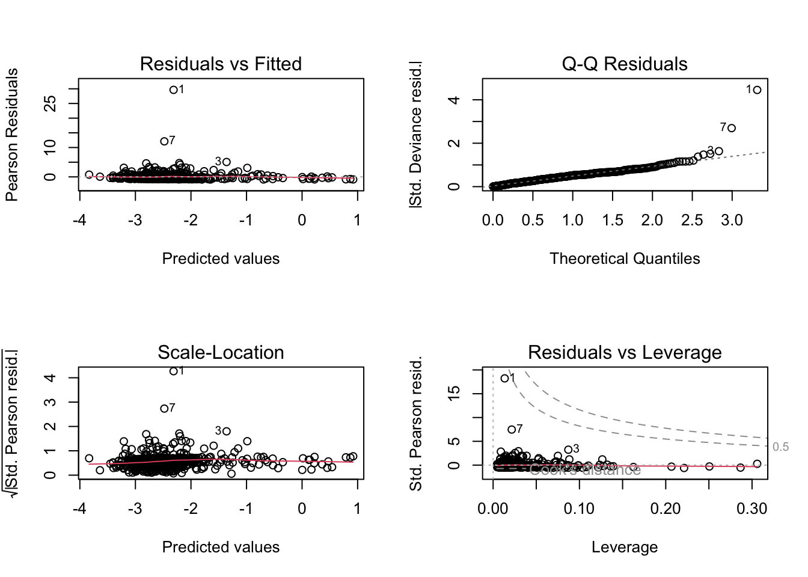
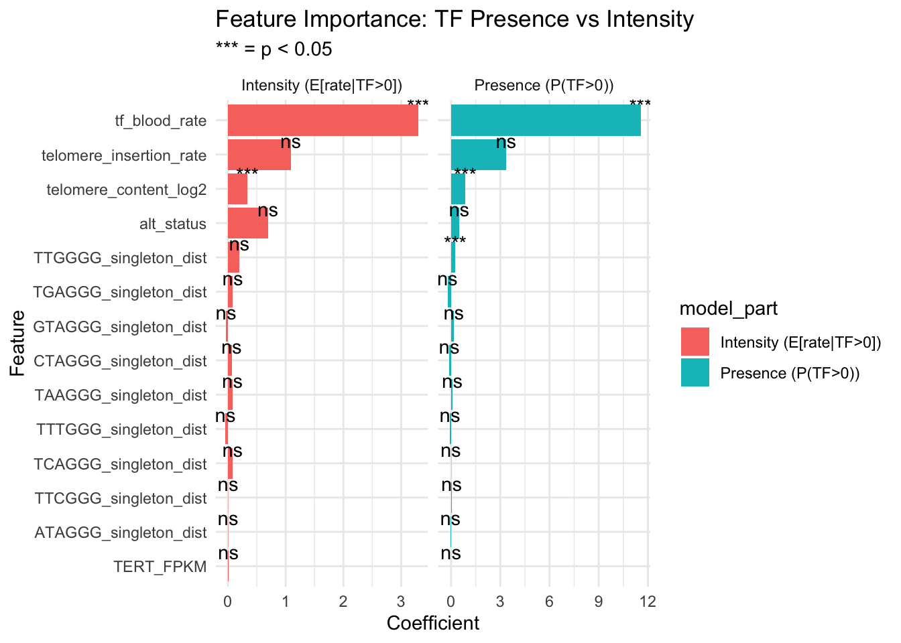

donor_id cancer_type alt_status tf_primary_rate
Length:817 Length:817 Length:817 Min. : 0.00000
Class :character Class :character Class :character 1st Qu.: 0.00000
Mode :character Mode :character Mode :character Median : 0.03147
Mean : 0.12777
3rd Qu.: 0.07243
Max. :19.73776
tf_blood_rate telomere_insertion_rate telomere_content_log2
Min. :0.00000 Min. :0.00000 Min. :-2.29092
1st Qu.:0.00000 1st Qu.:0.00000 1st Qu.:-0.95324
Median :0.02487 Median :0.00000 Median :-0.55712
Mean :0.03913 Mean :0.03592 Mean :-0.44621
3rd Qu.:0.05400 3rd Qu.:0.01934 3rd Qu.:-0.08914
Max. :0.55863 Max. :3.46027 Max. : 3.84469
TERT_FPKM ATAGGG_singleton_dist CTAGGG_singleton_dist
Min. : 0.00000 Min. :-3.82135 Min. :-3.0401
1st Qu.: 0.02014 1st Qu.:-0.56491 1st Qu.:-0.2686
Median : 0.10907 Median : 0.02487 Median : 0.1495
Mean : 0.91717 Mean : 0.01321 Mean : 0.1797
3rd Qu.: 0.39077 3rd Qu.: 0.59111 3rd Qu.: 0.6213
Max. :53.76790 Max. : 4.47470 Max. : 2.8541
GTAGGG_singleton_dist TAAGGG_singleton_dist TCAGGG_singleton_dist
Min. :-2.43840 Min. :-3.13241 Min. :-2.8553
1st Qu.:-0.32314 1st Qu.:-0.53764 1st Qu.:-0.4778
Median : 0.03610 Median : 0.10627 Median : 0.1182
Mean : 0.03857 Mean : 0.07596 Mean : 0.1982
3rd Qu.: 0.33915 3rd Qu.: 0.69820 3rd Qu.: 0.7847
Max. : 2.74981 Max. : 3.81679 Max. : 7.5686
TGAGGG_singleton_dist TTCGGG_singleton_dist TTGGGG_singleton_dist
Min. :-5.27154 Min. :-3.23509 Min. :-3.02421
1st Qu.:-0.35882 1st Qu.:-0.48603 1st Qu.:-0.36756
Median : 0.07551 Median : 0.09028 Median :-0.01286
Mean : 0.10597 Mean : 0.15567 Mean : 0.02180
3rd Qu.: 0.46824 3rd Qu.: 0.66142 3rd Qu.: 0.44543
Max. : 6.67267 Max. : 8.73932 Max. : 3.19366
TTTGGG_singleton_dist Specimen.Type.Summary
Min. :-3.80780 Length:817
1st Qu.:-0.40600 Class :character
Median : 0.02340 Mode :character
Mean : 0.00976
3rd Qu.: 0.48155
Max. : 2.25362 13_1_tTF_regression_+blood
Repeating the same pipeline fo the previous document, adding blood TF rate.
Setup
Since we are in a regression task, it is better to have a distribution for our response variable as symmetric as possible. We know it is currently strongly skewed, thus we can apply a log1p transformation to deal with its asymmetry and its zero values. We can do the same also for similarly distributed features, such as telomere insertion.
We also drop unwanted columns and recode alt_status as 0 (ALT-low) and 1 (ALT-high).
Split the dataset
We split the dataset with a 70/30 split in training set and test set. We won’t touch the latter until final performance estimation, to avoid data leakage.
Metrics functions
We define functions to help us in the evaluation of the performances of the models. In particular we will use RMSE and R squared.
Manual Cross-Validation
We use a 5-fold cross-validation on the training set. We do it manually to have to possibility to further extend to other metrics, methods, or whatever.
CV results
Averages and standard deviations on 5 folds.
# A tibble: 3 × 5
model rmse_mean rmse_sd r2_mean r2_sd
<chr> <dbl> <dbl> <dbl> <dbl>
1 rf 0.164 0.0816 0.303 0.425
2 lasso 0.172 0.0837 0.276 0.296
3 lm 0.172 0.0840 0.258 0.333
Feature importance : LASSO
For each feature we register in how many folds is has been selected from Lasso and the mean/SD of the coefficient. A feature selected in all folds with a stable coefficient should be a strong enough signal. Otherwise, rarely selected features or unstable coefficients must be interpreted carefully.
# A tibble: 14 × 5
feature n_selected freq coef_mean coef_sd
<chr> <int> <dbl> <dbl> <dbl>
1 telomere_insertion_rate 25 5 0.549 0.232
2 telomere_content_log2 25 5 0.0417 0.00752
3 TTCGGG_singleton_dist 25 5 0.0226 0.00746
4 TCAGGG_singleton_dist 25 5 0.0168 0.00678
5 TGAGGG_singleton_dist 25 5 0.0165 0.00858
6 tf_blood_rate 24 4.8 0.299 0.128
7 alt_status 24 4.8 0.0790 0.0441
8 TERT_FPKM 16 3.2 0.00103 0.00134
9 TTGGGG_singleton_dist 15 3 0.00433 0.00545
10 TTTGGG_singleton_dist 13 2.6 -0.00396 0.00469
11 ATAGGG_singleton_dist 7 1.4 -0.00137 0.00254
12 GTAGGG_singleton_dist 6 1.2 0.00229 0.00541
13 CTAGGG_singleton_dist 6 1.2 -0.00206 0.00462
14 TAAGGG_singleton_dist 5 1 -0.000432 0.00139
Feature importance: Random Forest
# A tibble: 14 × 3
feature inc_mse_mean inc_mse_sd
<chr> <dbl> <dbl>
1 TTCGGG_singleton_dist 10.2 2.02
2 telomere_insertion_rate 7.97 2.49
3 telomere_content_log2 5.86 3.15
4 tf_blood_rate 3.32 3.13
5 alt_status 3.03 1.08
6 TERT_FPKM 2.66 1.98
7 TGAGGG_singleton_dist 1.44 2.88
8 GTAGGG_singleton_dist 1.08 1.45
9 TTTGGG_singleton_dist 0.322 1.95
10 TCAGGG_singleton_dist 0.304 1.23
11 TTGGGG_singleton_dist 0.247 2.21
12 ATAGGG_singleton_dist 0.228 1.36
13 CTAGGG_singleton_dist -0.436 0.950
14 TAAGGG_singleton_dist -0.907 1.43 
Comparison LASSO vs RF: do they agree?

Final evaluation on test set
Let’s fit each model on the whole training set and evaluate on the test set.
# A tibble: 3 × 3
model rmse r2
<chr> <dbl> <dbl>
1 Random Forest 0.117 0.455
2 LASSO 0.123 0.405
3 LM 0.125 0.384Quantification of the residuals
Beware that these results are in log1p scale!
# A tibble: 246 × 5
true pred error abs_error perc_error
<dbl> <dbl> <dbl> <dbl> <chr>
1 1.10 0.0677 -1.03 1.03 -93.8%
2 0.931 0.907 -0.0244 0.0244 -2.6%
3 0.870 0.768 -0.102 0.102 -11.8%
4 0.861 0.755 -0.107 0.107 -12.4%
5 0.747 0.589 -0.159 0.159 -21.2%
6 0.677 0.197 -0.480 0.480 -70.9%
7 0.627 0.0750 -0.552 0.552 -88%
8 0.572 0.251 -0.321 0.321 -56.1%
9 0.513 0.108 -0.405 0.405 -78.9%
10 0.501 0.131 -0.371 0.371 -74%
11 0.475 0.173 -0.302 0.302 -63.7%
12 0.462 0.807 0.345 0.345 74.6%
13 0.422 0.316 -0.106 0.106 -25.2%
14 0.366 0.730 0.364 0.364 99.4%
15 0.316 0.128 -0.188 0.188 -59.4%
16 0.278 0.0859 -0.192 0.192 -69.1%
17 0.253 0.0534 -0.199 0.199 -78.9%
18 0.246 0.0704 -0.176 0.176 -71.4%
19 0.195 0.0264 -0.169 0.169 -86.5%
20 0.190 0.114 -0.0767 0.0767 -40.3%
21 0.168 0.150 -0.0178 0.0178 -10.6%
22 0.166 0.203 0.0365 0.0365 22%
23 0.164 0.309 0.145 0.145 88%
24 0.160 0.150 -0.00961 0.00961 -6%
25 0.155 0.0589 -0.0959 0.0959 -62%
26 0.153 0.0742 -0.0784 0.0784 -51.4%
27 0.141 0.0423 -0.0988 0.0988 -70%
28 0.139 0.151 0.0124 0.0124 9%
29 0.138 0.240 0.102 0.102 74.3%
30 0.135 0.0594 -0.0757 0.0757 -56%
31 0.134 0.0668 -0.0676 0.0676 -50.3%
32 0.127 0.0452 -0.0822 0.0822 -64.5%
33 0.126 0.0508 -0.0757 0.0757 -59.8%
34 0.116 0.0331 -0.0826 0.0826 -71.4%
35 0.113 0.0432 -0.0694 0.0694 -61.7%
36 0.110 0.0404 -0.0701 0.0701 -63.4%
37 0.106 0.0376 -0.0684 0.0684 -64.5%
38 0.102 0.151 0.0485 0.0485 47.5%
39 0.0960 0.0539 -0.0421 0.0421 -43.8%
40 0.0955 0.0448 -0.0507 0.0507 -53.1%
41 0.0928 0.0252 -0.0675 0.0675 -72.8%
42 0.0906 0.0459 -0.0447 0.0447 -49.3%
43 0.0885 0.0511 -0.0374 0.0374 -42.3%
44 0.0884 0.0674 -0.0210 0.0210 -23.8%
45 0.0869 0.143 0.0559 0.0559 64.3%
46 0.0861 0.0653 -0.0208 0.0208 -24.2%
47 0.0858 0.0614 -0.0243 0.0243 -28.4%
48 0.0854 0.0963 0.0109 0.0109 12.8%
49 0.0849 0.0558 -0.0292 0.0292 -34.3%
50 0.0841 0.0900 0.00597 0.00597 7.1%
# ℹ 196 more rows# A tibble: 1 × 6
mean_error sd_error mae median_ae max_ae rmse
<dbl> <dbl> <dbl> <dbl> <dbl> <dbl>
1 0.00940 0.117 0.0637 0.0347 1.03 0.117Two-model
Call:
glm(formula = I(tf_primary_rate > 0) ~ ., family = binomial(link = "logit"),
data = clean_data)
Coefficients:
Estimate Std. Error z value Pr(>|z|)
(Intercept) 0.7444070 0.1319481 5.642 1.68e-08 ***
alt_status 0.5005660 0.6019005 0.832 0.4056
tf_blood_rate 11.5570695 2.2415008 5.156 2.52e-07 ***
telomere_insertion_rate 3.3629897 2.6387177 1.274 0.2025
telomere_content_log2 0.8725785 0.1335242 6.535 6.36e-11 ***
TERT_FPKM 0.0006037 0.0278350 0.022 0.9827
ATAGGG_singleton_dist -0.0349609 0.0847366 -0.413 0.6799
CTAGGG_singleton_dist -0.1047604 0.1196693 -0.875 0.3813
GTAGGG_singleton_dist 0.1697900 0.1560776 1.088 0.2767
TAAGGG_singleton_dist 0.0776898 0.0866125 0.897 0.3697
TCAGGG_singleton_dist -0.0105287 0.0950712 -0.111 0.9118
TGAGGG_singleton_dist -0.2130798 0.1306555 -1.631 0.1029
TTCGGG_singleton_dist 0.0383309 0.0996188 0.385 0.7004
TTGGGG_singleton_dist 0.2620056 0.1295695 2.022 0.0432 *
TTTGGG_singleton_dist -0.0575128 0.1262065 -0.456 0.6486
---
Signif. codes: 0 '***' 0.001 '**' 0.01 '*' 0.05 '.' 0.1 ' ' 1
(Dispersion parameter for binomial family taken to be 1)
Null deviance: 1040.99 on 816 degrees of freedom
Residual deviance: 934.78 on 802 degrees of freedom
AIC: 964.78
Number of Fisher Scoring iterations: 6
Call:
glm(formula = tf_primary_rate ~ ., family = Gamma(link = "log"),
data = df_positive)
Coefficients:
Estimate Std. Error t value Pr(>|t|)
(Intercept) -2.620822 0.101335 -25.863 < 2e-16 ***
alt_status 0.694688 0.406204 1.710 0.087816 .
tf_blood_rate 3.299210 1.255750 2.627 0.008857 **
telomere_insertion_rate 1.090965 0.737638 1.479 0.139737
telomere_content_log2 0.340543 0.094806 3.592 0.000359 ***
TERT_FPKM 0.010868 0.015854 0.685 0.493329
ATAGGG_singleton_dist 0.005619 0.080572 0.070 0.944431
CTAGGG_singleton_dist 0.065195 0.108857 0.599 0.549491
GTAGGG_singleton_dist -0.029331 0.133670 -0.219 0.826402
TAAGGG_singleton_dist 0.079561 0.076913 1.034 0.301409
TCAGGG_singleton_dist 0.082655 0.084861 0.974 0.330501
TGAGGG_singleton_dist 0.086786 0.095023 0.913 0.361494
TTCGGG_singleton_dist 0.004241 0.073507 0.058 0.954010
TTGGGG_singleton_dist 0.198336 0.114438 1.733 0.083655 .
TTTGGG_singleton_dist -0.043467 0.111223 -0.391 0.696096
---
Signif. codes: 0 '***' 0.001 '**' 0.01 '*' 0.05 '.' 0.1 ' ' 1
(Dispersion parameter for Gamma family taken to be 2.679682)
Null deviance: 723.53 on 543 degrees of freedom
Residual deviance: 393.14 on 529 degrees of freedom
AIC: -1558.3
Number of Fisher Scoring iterations: 16


# A tibble: 14 × 3
term avg_abs_coef n_sig
<chr> <dbl> <int>
1 tf_blood_rate 7.43 2
2 telomere_insertion_rate 2.23 0
3 telomere_content_log2 0.607 2
4 alt_status 0.598 0
5 TTGGGG_singleton_dist 0.230 1
6 TGAGGG_singleton_dist 0.150 0
7 GTAGGG_singleton_dist 0.0996 0
8 CTAGGG_singleton_dist 0.0850 0
9 TAAGGG_singleton_dist 0.0786 0
10 TTTGGG_singleton_dist 0.0505 0
11 TCAGGG_singleton_dist 0.0466 0
12 TTCGGG_singleton_dist 0.0213 0
13 ATAGGG_singleton_dist 0.0203 0
14 TERT_FPKM 0.00574 0